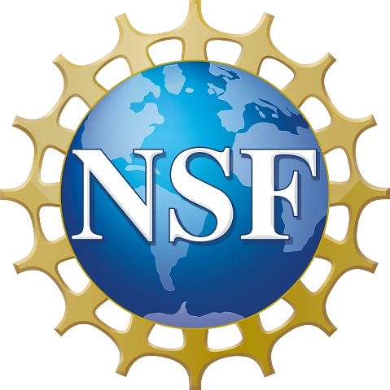

NCURA Region VI/VII Regional Meeting, Denver
Augmenting Research Administration with AI
The value of any AI tool is bounded by the quality of the data underneath it, and by the nature of the work itself. This three-hour, hands-on workshop builds a practical understanding of where AI can support research administration and where it cannot, with open-source AI4RA tools and a structured ethical discussion you can take home.
Materials on this site will grow as the workshop takes shape. Check back before Denver for slides, activities, and resources.

Funded by National Science Foundation grant #2427549What you will leave with
Foundational skills to use AI responsibly in your own workflows while keeping human oversight.
How AI works, and where it fails
How large language models generate output, the tasks they perform well, and the ways they fail. Which research administration activities benefit from AI, which depend on data infrastructure, and which should stay human-driven.
Hands-on with open-source AI4RA tools
A prompt engineering trainer, a document extraction and review workflow, and a data lakehouse architecture for preparing institutional data. Leave with a mental model for evaluating output and judging data readiness.
Ethics, judgment, and oversight
A structured ethical discussion mini-workshop you can run at your own institution, plus reasoning puzzles that show where human judgment still beats the machine and what verification and oversight should look like.
Before you arrive
Bring a laptop and one task from your own work that you suspect AI could help with.
The activities are designed around real research administration tasks. The more concrete your example, the more useful the workshop will be.